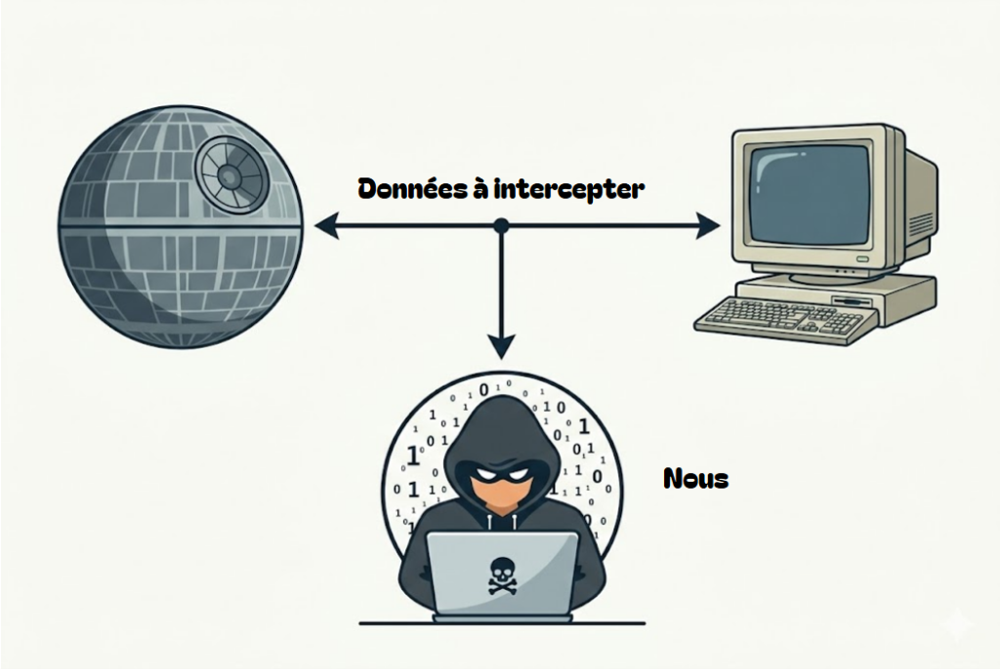

EPISODE I
SAE 1.1
LE CHALLENGE FTP
Une perturbation a été détectée dans le réseau de la République.
Les Sith utilisent le protocole FTP pour transmettre des messages codés à travers la galaxie.
Un jeune Padawan des Réseaux & Télécommunications de l'IUT de Vélizy a été mandaté
pour intercepter ces transmissions, décoder le message de Dark Sidious
et neutraliser la menace avant qu'il ne soit trop tard...
Que la Force soit avec lui.
// TRANSMISSION DÉCHIFFRÉE — ORDRE 66 NEUTRALISÉ //
Interception FTP & CTF
Un CTF (Capture The Flag) est un exercice de cybersécurité où l'on enchaîne des
défis pour extraire une information cachée — un mot de passe, un fichier, un message secret. C'est
le type d'exercice pratiqué par les pentesters (testeurs d'intrusion), l'un des
métiers les plus recherchés en cybersécurité.
Pour ce premier CTF, la mission était scénarisée à la sauce Star Wars : intercepter
et décoder un message chiffré transmis par les Sith via une communication FTP capturée sur le réseau.
Identifier Dark Sidious. Récupérer le Flag. Servir la Force.

Outils & environnements
Les 4 grandes étapes du CTF
Preuves & démonstrations


Ce que j'ai appris
- Analyse de captures réseau avec Wireshark : lecture des trames, protocoles, données.
- Compréhension approfondie du protocole FTP (modes actif/passif, négociation, clair).
- Programmation Python & Scapy : parsing de paquets, filtrage, extraction.
- Introduction à la cryptographie : chiffrement par substitution et décodage.
- Sensibilisation aux risques de sécurité : protocoles non chiffrés, MITM.
- Découverte des plateformes CTF (Root-Me, HackTheBox, VulnHub).